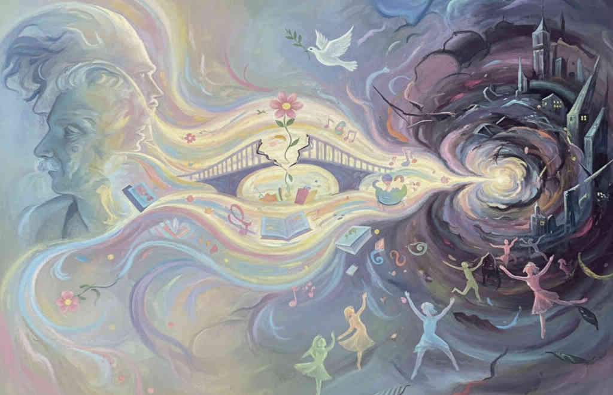

Ci sono altre due cose da dire sulla coscienza normale aggressiva e/o violenta. Da circa cinquant’anni la violenza dei singoli verso gli altri è diventata anche simbolica; ciò vuol dire che io agisco in modo violento su di te, con la parola o con i fatti, se tu rappresenti simbolicamente un modo di considerare te stesso che io non so accettare o se tu non accetti ciò che pensi che io sia.
Cosa succede? Torniamo all’uomo impulsivo del cervello primitivo, che produce sostanze dell’impulsività che sono le stesse attivate dalle droghe. Sono quelle che danno la dipendenza, cioè le sostanze che l’SNC produce nel cervello inferiore, inibite o redistribuite in modo attenuato dall’attività funzionale dei lobi superiori frontali che come visto stenta a farsi largo. La violenza simbolica assume un rilievo particolare. E’ quella per cui ti vedo vestito in un certo modo, camminare in un certo modo (pensate all’omofobia) oppure penso al tuo stile di vita che non mi va bene e allora insieme ad altri bulli, se tu sei fragile, io ti bullizzo.
Cosa vuol dire? Non tollero la tua differenza o meglio il tuo modo di presentarti mi mette in crisi, non riesco ad affrontarti in modo più positivo, mi annoio e vinco nel modo più facile. Dunque vincerà l’azione senza progetto e senza formazione critica (la formazione critica della coscienza è quella che sa mettere in discussione i propri limiti) e direi “noi siamo una specie con una coscienza che sta diventando sempre più mediocre, aggressiva o apatica, che non produce nemmeno per se, dipendente da quello che gli viene proposto”. Vedi l’ampia dipendenza giovanile.
La persona, per non riconoscere la propria inadeguatezza di progetto, vive questa sua pochezza non come stimolo per migliorare se stesso in modo civile e piuttosto dei linguaggi simbolici prevale la “violenza simbolica”. Al tempo della mia giovinezza la logica delle brigate rosse era: io uccido te che sei simbolo dello stato borghese, sei un magistrato, un avvocato, un medico, cioè sei simbolo di uno stato da abbattere e pertanto io ti uccido. Dopo le torri gemelle abbiamo una cosa del tutto nuova: l’attentato dell’11 Settembre 2001 è stato certamente un attentato contro i simboli dello Stato americano.
Piuttosto recentemente da circa 15 anni, esistono violenze che uccidono anche persone ignote. Prendo una macchina, vado su un marciapiede a grande velocità ed uccido dieci persone che non conosco e che non rappresentano dei simboli, ma l’azione violenta procede. Sta venendo fuori anche una violenza contro persone senza un valore simbolico, è violenza per violenza che ormai si sta liberando senza più limiti, cioè non c’è nella coscienza attuale la capacità di accettare critiche perché non si accetta più la nostra inadeguatezza.
Ricordate lo hostis iustus cui si concedeva l’onore delle armi? Nella giovinezza la civiltà personale è un compito molto difficile. Riporto una frase che a me è stata detta da un ragazzo di cultura superiore (laurea) su come si può vivere la propria condizione: “Sempre più connessi ma più isolati, disorientati, impotenti, non distinguiamo più tra reale e virtuale, siamo privati dei gesti in una socialità fredda, recitata e finta. Temiamo l’autenticità nostra e degli altri”.
Avevo scritto qualche tempo fa che l’uomo capitalista e i suoi oppositori hanno sancito che Dio è morto e che dovremmo rimettere in moto quattro virtù teologali, che ci possono salvare da ciò che annichilisce la coscienza in modo peggiorativo. Queste virtù sono: onestà intellettuale ed etica, curiosità per l’opinione altrui, carità interpretativa e valore al senso del limite. Nessun può bullizzare un fragile mentale perché differente.
Ho scritto anche un elogio del compromesso. Come noto le differenze formano le identità personali. Il compromesso vuol dire che io, insieme a te, avendo una visione diversa, ho potuto elaborare con te ed abbiamo trovato qualcosa in comune che non va più bene solo a me o solo a te, ma in qualche cosa va bene a noi due. Questo è certo prova di fragilità di ognuno di noi due, riconosco di essere fragile, ma la mia e la tua fragilità vogliono dire autenticità. Il compromesso è un noi che nasce dal confronto, che costruisce un ponte per non scavare un fossato. Non vinco io, non vinci tu, ma vinciamo insieme. Il compromesso è “la forza di chi sa amare senza dominare, rispettando l’altro”.
A conclusione della conferenza vorrei proporvi qualche ricetta per vivere meglio e senza aggressività.
In primo luogo andate a rivedere il Film P.Docter dal titolo “Inside out”. In questo fantastico film di cartoni animati andate a rivedere come le sette emozioni fondamentali del cervello siano personaggi. Questa dell’emozione persona è un colpo di genio ove si dimostra che sono possibili relazioni umane anche tra le sette emozioni differenti che Docter deriva dalla psicologia e dalla psicanalisi: rabbia, gioia, disgusto, disprezzo, tristezza, sorpresa e paura. Andate a vedere nel film come viene soccorsa la paura dalla tristezza e viceversa. Quindi perfino le emozioni se sono vissute non per opporsi od imporsi, ma per proporsi, aiuterà a trovare le mediazioni per conoscere se stessi.
Infine un tema fondamentale è che l’incivilimento della coscienza è possibile ad una condizione fondamentale: Se noi siamo presi completamente da quello che facciamo ogni giorno o non siamo curiosi e interessati a migliorare, non usciremo da questa storia di possibile aggressività. Noi dobbiamo essere attori della nostra vita, ma anche spettatori, cioè dobbiamo distaccarci, fermarci ogni tanto, chiederci che cosa stiamo facendo, come stiamo lavorando, come ci muoviamo nelle relazioni con gli altri, come creiamo le alleanze possibili per vivere meglio in ogni relazione umana. In sostanza se non guardiamo dall’alto noi stessi e il mondo, non diventiamo persone mature, perché dobbiamo avere uno sguardo verso un altrove che ci distrae dalle dinamiche negative, dobbiamo superare l’ansia situazionale, inventando altri mondi, guardando il nostro contesto dall’alto. Così sapremo essere persone più civili e sapremo accettare le differenze senza distruggerle.
Ed ora cito una frase di un grande scrittore di fantascienza, perduto nel 2007, Kurt Vonnegut che in una conversazione meravigliosa con gli studenti universitari donò loro questa frase: “Contro chi vuole cancellare la bellezza della coscienza, la compassione, la consapevolezza curiosa di potersi esprimere con più linguaggi di fronte alla violenza, fermiamoci, ascoltiamo, cantiamo, scriviamo, creiamo, danziamo la vita, lavoriamo bene, distacchiamoci con coraggio, dobbiamo nutrire noi stessi come singoli e comunità per curare le nostre solitudini in modo maturo, non già con l’apatia, con l’impulsività e con la guerra. Quando siete felici fateci caso”.
L’altra citazione è di un professore universitario, cattedratico di pedagogia religiosa all’Università di Munster, che è islamico e si chiama Mohammed Korghide. Ha pubblicato un libro il cui titolo è “Senza ebrei nessun Islam. Egli scrive: “Anziché strumentalizzare il passato per legittimare un presente eletto come giusto per sempre e dunque immutabile, occorrono narrazioni per un futuro cui ci dobbiamo affacciare fuori dalla logica della negazione dell’altro e del vittimismo. Certamente occorre reinventarsi identità che trascendano l’essere immediato per divenire soggetti di pace, di creatività, di dialogo. Ciò non tradisce la storia personale né sociale, ma la trasforma in un futuro possibile, contro tutte le semplificazioni ideologiche, sempre connesse a consolidare poteri personali o politici e dove il presente è senza nessuna speranza di divenire diverso dall’attuale”.
Questa riflessione del professor Korghide è l’unico altrove possibile di una civiltà della coscienza che volevano Albert Einstein e Sigmond Freud. Vorrei che si riflettesse sulla grandezza di pensiero di questi due grandi uomini. Avevano intuito le vie difficili della pace attraverso l’incivilimento della coscienza ed il suo grande significato.
Infine una mia raccomandazione: siate curiosi, coltivate interessi, rispettate le virtù teologali e migliorate la vostra cultura. La vita è un dono, ma la coscienza più matura è una conquista, SEMPRE. Ci piazza o no.
Dedico questo mio scritto alla memoria del mio più grande maestro di clinica, Professor Giovanni Jervis che ho perduto nel 2009.
A lui il mio ricordo riverente.
Giovanni Mastrangeli